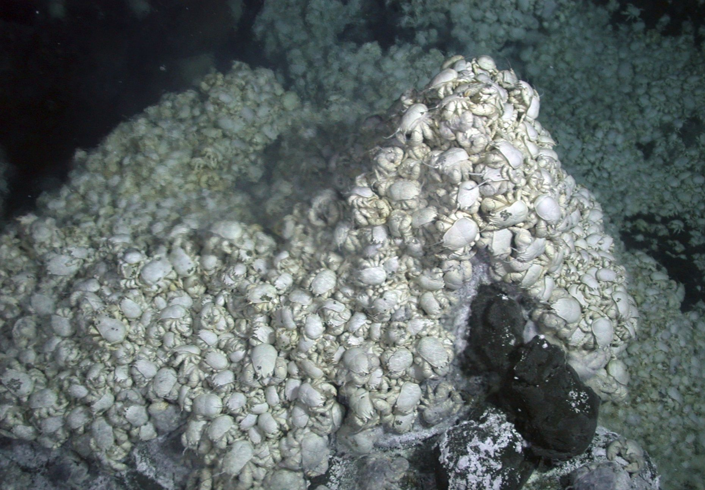
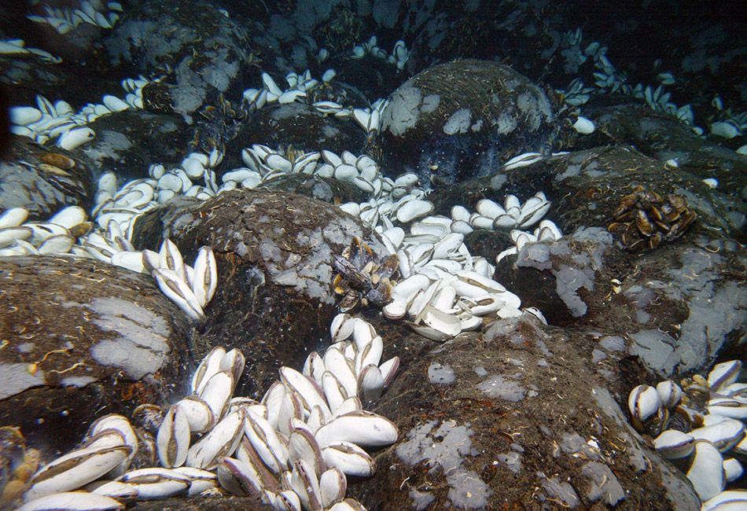

Hydrothermal Vents
Organisms in Hydrothermal Vents (AKA the Critters!)
Some animals commonly living in hydrothermal vents are octopuses, tube worms, zoarcid fishes, clams, sea dandelions, shrimps, crabs, and mussels. We will focus on the lesser-known organisms in hydrothermal vents, such as tube worms, sea dandelions, and zoarcid fishes.



Tube Worms (Riftia pachyptila)
Tube worms reside in hydrothermal vents in the Eastern Pacific Ocean. These organisms can grow huge in size, up to eight feet long. Tube worms do not eat because they do not have mouths or stomachs. Therefore, they depend on the bacteria inside the tube worms for subsistence. Chitin is responsible for comprising the hard shell tube in tube worms. Furthermore, the tubes protect the worms from predators and toxic chemicals lingering in the vents.

Sea dandelions (Thermopalia taraxaca)
Sea dandelions comprise a group of small animals, zooids, holding themselves together. Their long tentacles help them maneuver around the environment and attach themselves to rocks. These small fuzzy creatures are scavengers. Oddly enough, they are related to jellyfish. The presence of many sea dandelions typically means that the hydrothermal vent is no longer viable. They are some of the last animals to occupy hydrothermal vents.

Zoarcid Fish (Thermarces cerberus)
Zoarcid fishes are one of the top predators within the food chain. They are also known as pink vent fishes. Their diets range from tube worms to shrimp, and they possess a big appetite. They are slow and passive in character, though. They spend most of their time hanging around mussels and tube worms.